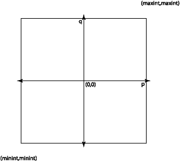

8.5. 黑盒测试与玻璃盒测试#
我们想知道一个程序适用于所有可能的输入。问题
测试的一个缺点是尝试所有可能的输入通常是不可行的。
例如，假设我们正在实现一个提供抽象的模块
有理数的数据类型。它的操作之一可能是添加
函数 plus，例如：
module type RATIONAL = sig
(** A [t] is a rational. *)
type t
(** [create p q] is the rational number [p/q].
Raises: [Invalid_argument "0"] if [q] is 0. *)
val create : int -> int -> t
(** [plus r1 r2] is [r1 + r2]. *)
val plus : t -> t -> t
end
module Rational : RATIONAL = struct
(** AF: [(p, q)] represents the rational number [p/q].
RI: [q] is not 0. *)
type t = int * int
let create p q =
if q = 0 then invalid_arg "0" else (p, q)
let plus (p1, q1) (p2, q2) =
(p1 * q2 + p2 * q1, q1 * q2)
end
Show code cell output
module type RATIONAL =
sig type t val create : int -> int -> t val plus : t -> t -> t end
module Rational : RATIONAL
彻底测试这一函数需要什么？我们想尝试
所有可能的理性作为 r1 和 r2 参数。有理数形成
来自两个整数，并且在现代 OCaml 实现上有 \(2^{63}\) 整数。
因此，大约有 \((2^{63})^4 = 2^{252}\) 可能的输入
plus 函数。即使我们每纳秒测试一次添加，也需要
大约 \(10^{59}\) 年才能完成这一函数的测试。
显然我们无法彻底测试软件。但这并不意味着我们应该 放弃测试。这只是意味着我们需要仔细思考我们的 测试用例应该尽可能有效地说服我们 该代码有效。
考虑上面我们的 create 函数。它接受两个整数 p 和 q 作为
论据。我们应该如何选择数量相对较少的测试
让我们相信该函数在所有可能的情况下都可以正确工作的案例
输入？我们可以将所有可能输入的空间可视化为一个大正方形：

这个正方形大约有 \(2^{126}\) 个点，所以我们无法测试它们 所有。对它们进行全部测试将主要是浪费时间—大多数 可能的输入并没有提供任何新内容。我们需要一种方法来找到一组点 在这个空间中进行测试，这些内容很有趣，并且可以很好地了解 程序在整个空间中的行为。
输入空间通常包含许多子集，其中的行为 整个子集中的代码在某些基本方面是相似的。我们不明白 通过测试每个此类子集的多个输入来获取任何附加信息。
如果我们测试输入空间的所有有趣区域，我们已经取得了很好的成绩 覆盖范围。我们希望测试能够在某种有用的意义上覆盖可能的空间 程序输入。
实现覆盖的两种好方法是黑盒测试和玻璃盒 测试。接下来我们讨论这些。
8.5.1. 黑盒测试#
在选择测试用例以获得良好的覆盖范围时，我们可能需要考虑两者 正在测试的程序或模块的规范和实现。 事实证明，我们通常可以通过以下方式很好地挑选测试用例： 只看规范而忽略实现。这是已知的 作为黑盒测试。这个想法是我们将代码视为黑匣子 我们只能看到它的表面：它的规格。我们选择测试用例 通过查看规范如何隐式引入划分边界 不同区域可能投入的空间。
在编写黑盒测试用例时，我们会问自己哪组测试用例是 将产生规范所预测的独特行为。它是 尝试典型输入和边界情况输入很重要 又名角落情况或边缘情况。一个常见的错误是只测试典型的 输入，结果是程序通常可以工作，但失败的次数较少 频繁的情况。确定方法也很重要 规范创建了应该引发类似行为的输入类 函数，并测试这些通过规范的路径。这里有 一些例子。
示例 1.
以下是有关如何测试 create 函数的一些想法：
查看上面的正方形，我们发现它的边界位于
min_int处，并且max_int。我们想要尝试在角落和沿线构建理性 正方形的边，例如create min_int min_int、create max_int 2等。p=0行很重要，因为p/q一直为零。我们应该尝试(0, q)用于q的各种值。我们应该在空间的所有四个象限中尝试一些典型的
(p, q)对。我们应该尝试两个
(p, q)对，其中q均分为p，并且 其中q不分为p的对。(1, q)、(-1, q)、(p, 1)、(p, -1)形式对，用于各种p和 考虑到有理数的属性，q也可能很有趣。
规范还指出，代码将检查 q 是否不为零。我们
应该构建一些测试用例以确保此检查按照广告完成。
尝试 (1, 0)、(max_int, 0)、(min_int, 0)、(-1, 0)、(0, 0) 来查看
他们都提出了指定的例外可能是一组足够的
黑盒测试。
示例 2.
考虑一个函数 list_max：
(** Return the maximum element in the list. *)
val list_max: int list -> int
什么是一套好的黑盒测试用例？这里的输入空间是 所有可能的整数列表。我们需要尝试一些典型的输入并考虑 边界情况。根据此规范，边界情况包括以下内容：
包含一个元素的列表。事实上，一个空列表可能是第一个 我们想到的边界情况。看看上面的规格，我们意识到 没有指定空列表的情况下会发生什么。于是，思考 关于边界情况对于识别错误也很有用 规格。
包含两个元素的列表。
一个列表，其中最大值是第一个元素。或者最后一个元素。或者 列表中间的某个位置。
每个元素都相等的列表。
一个列表，其中元素按升序排列，并且一个 其中它们按降序排列。
最大元素为
max_int的列表，以及 最大元素为min_int。
示例 3.
考虑函数 sqrt：
(** [sqrt x n] is the square root of [x] computed to an accuracy of [n]
significant digits.
Requires: [x >= 0] and [n >= 1]. *)
val sqrt : float -> int -> float
前提条件确定了 x 的两种可能性（要么是 0，要么是
更大）和 n 的两种可能性（要么是 1 要么更大）。这导致
四个“规范路径”，即代表性路径和边界路径
满足前提条件的情况，我们应该测试：
x为 0，n为 1x大于 0 并且n为 1x为 0 并且n大于 1x大于 0，n大于 1。
8.5.2. 数据抽象的黑盒测试#
到目前为止，我们一直在考虑一次只测试一个函数。但数据 抽象通常有很多操作，我们需要测试这些操作如何 操作彼此交互。区分消费者和 数据抽象的生产者：
消费者是一种将数据抽象值视为 输入。
生产者是一个返回数据抽象值的操作 作为输出。
例如，考虑这个集合抽象：
module type Set = sig
(** ['a t] is the type of a set whose elements have type ['a]. *)
type 'a t
(** [empty] is the empty set. *)
val empty : 'a t
(** [size s] is the number of elements in [s]. *
[size empty] is [0]. *)
val size : 'a t -> int
(** [add x s] is a set containing all the elements of
[s] as well as element [x]. *)
val add : 'a -> 'a t -> 'a t
(** [mem x s] is [true] iff [x] is an element of [s]. *)
val mem : 'a -> 'a t -> bool
end
Show code cell output
module type Set =
sig
type 'a t
val empty : 'a t
val size : 'a t -> int
val add : 'a -> 'a t -> 'a t
val mem : 'a -> 'a t -> bool
end
empty 和 add 函数是生产者；以及 size、add 和 mem
函数是消费者。
当黑盒测试数据抽象时，我们应该测试每个消费者如何
数据抽象处理通过它的每个生产者的每条路径。在
Set 示例，这意味着测试以下内容：
size如何处理empty集；size如何处理add生成的集合，当add离开集合时 不变以及增加集合时；add如何处理empty以及add本身生成的集合；mem如何处理empty和add生成的集，包括路径 其中mem在已添加的元素以及元素上调用 那还没有。
8.5.3. 玻璃盒测试#
黑盒测试是编写测试用例时的一个很好的起点，但是 最终这还不够。特别是，无法确定如何 实际上对黑盒测试套件的实现进行了很多报道 达到—我们其实需要知道实现源码。测试 基于该代码的测试称为“玻璃盒”或“白盒”测试。玻璃盒 测试可以通过测试“执行路径”来改进黑盒 实现代码：有条件求值的一系列表达式 基于 if 表达式、match 表达式和函数应用程序。测试 共同执行所有路径的情况被称为“路径完整”。在一个 最小，路径完整性要求每一行代码，甚至对于 程序中的每个表达式，都应该有一个测试用例使其 被处决。任何未执行的代码都可能包含错误（如果从未执行过的话） 已测试。
为了真正的路径完整性，我们必须考虑所有可能的执行路径 从开始到结束每个函数，并尝试练习每条不同的路径。在 一般来说这是不可行的，因为路径太多。一个好的方法是 将路径集视为我们试图探索的空间，并 确定该空间内值得测试的边界情况。
例如，考虑以下函数的实现，该函数查找 三个参数中的最大值：
let max3 x y z =
if x > y then
if x > z then x else z
else
if y > z then y else z
val max3 : 'a -> 'a -> 'a -> 'a = <fun>
黑盒测试可能会导致我们发明许多测试，但是看看
实现表明，通过代码只有四个路径—the
返回 x、z、y 或 z（再次）的路径。我们可以测试每一个
具有代表性输入的路径，例如：max3 3 2 1、max3 3 2 4、
max3 1 2 1、max3 1 2 3。
在进行玻璃盒测试时，我们应该包括每个分支的测试用例 每个（嵌套）if 表达式以及每个（嵌套）模式的每个分支都匹配。如果 有递归函数，我们应该包括基本案例的测试用例 以及每个递归调用。此外，我们应该包括测试用例来触发 每个可能引发异常的地方。
当然，路径完整测试并不能保证不存在错误。我们
仍然需要根据规范进行测试，即进行黑盒测试。对于
例如，下面是 max3 的一个损坏的实现：
let max3 x y z = x
测试 max3 2 1 1 路径完整，但未揭示错误。
8.5.4. 数据抽象的玻璃盒测试#
查看抽象函数和表示不变量以获取有关的提示
数据操纵的值空间中可能存在哪些边界
抽象。表示不变量是构建一个特别有效的工具
有用的测试用例。查看 Rational 数据的代表不变量
从上面的抽象中，我们看到它要求 q 非零。因此，我们
应该构建测试用例来查看是否有可能导致该不变性
被侵犯。
8.5.5. 黑盒与玻璃盒#
黑盒测试有一些重要的优点：
它不要求我们看到正在测试的代码。有时 代码不会以源代码形式提供，但我们仍然可以 无需它即可构建有用的测试用例。编写测试的人 案例不需要了解实现。
测试用例不依赖于实现。他们可以是 与实现并行或之前编写。进一步，好 黑盒测试用例不需要改变，即使 实现被完全重写。
构造黑盒测试用例引发程序员思考 仔细了解规范及其含义。很多 通过这种方式捕获规范错误。
黑盒测试的缺点是其覆盖范围可能不如 正如我们所希望的那样高，因为它必须在没有实现的情况下工作。
8.5.6. Bisect#
玻璃盒测试可以借助“代码覆盖率工具”来评估 该代码已由测试套件执行。 OCaml 的 bisect_ppx 工具 可以告诉你程序中的哪些表达式已经过测试，以及哪些表达式已经过测试 不。它的工作原理如下：
你可以使用 Bisect_ppx （此后简称为 Bisect）编译代码： 编译过程的一部分。它“检测”你的代码，主要是通过 插入要计算的附加表达式。
你运行你的代码。 Bisect 插入的仪器会导致你 除了你编写的任何功能之外，还可以进行一些编程 你自己：程序现在将记录源代码中的哪些表达式 实际上在运行时执行，而哪些则不执行。此外，该计划还将 现在生成一个包含该信息的输出文件。
你在该输出文件上运行一个名为
bisect-ppx-report的工具。它产生 HTML 显示代码的哪些部分已执行，哪些部分未执行。
这对测试套件的计算覆盖率有何帮助？如果你运行你的 OUnit测试套件，其中的测试用例将导致任何函数中的代码 他们测试要被处决。如果你没有足够的测试用例，可以在你的代码中添加一些代码 函数永远不会被执行。 Bisect 制作的报告将向你展示 到底是什么代码。然后，你可以设计新的玻璃盒测试用例以引起 要执行的代码，将它们添加到你的 OUnit 套件中，然后创建一个新的 Bisect 报告以确认代码确实得到执行。
二等分教程。
下载文件 sorts.ml。你会 找到插入排序和归并排序的实现。
下载文件 test_sorts.ml。它 具有 OUnit 测试套件的框架。
创建
dune文件来执行test_sorts：(executable (name test_sorts) (libraries ounit2) (instrumentation (backend bisect_ppx)))
运行：
$ dune exec --instrument-with bisect_ppx ./test_sorts.exe
这将在启用 Bisect 覆盖的情况下执行测试套件，从而导致一些
将生成名为 bisectNNNN.coverage 的文件。
运行：
$ bisect-ppx-report html
从测试套件执行中生成 Bisect 报告。 报告
位于新创建的名为 _coverage 的目录中。
在网络浏览器中打开文件
_coverage/index.html。查看每个文件 覆盖范围；你会看到我们已经成功测试了sorts.ml的百分之几 到目前为止我们的测试套件。单击该报告中sorts.ml的链接。 你会发现我们只覆盖了源代码的一行。测试文件中有一些额外的测试。尝试取消注释这些，如 记录在测试文件中，并增加代码覆盖率。每个之间 运行，需要删除
bisectNNNN.coverage文件，否则 该报告将包含以前运行的信息：$ rm bisect*.coverage
当你取消注释所提供的测试时，你应该处于 25% 覆盖范围，包括所有插入排序的实现。为了好玩，尝试一下 添加更多测试以获得合并排序的 100% 覆盖率。
并行性。 默认情况下，OUnit 将尝试运行以下中的一些测试
并行，这减少了运行大型测试套件所需的时间
权衡使其测试运行的顺序不确定。这是
如果你正在测试命令式代码，这可能会影响覆盖率。使
测试一次运行一个，按顺序，你可以传递标志
-runner sequential 到可执行文件。 OUnit 将看到该标志并停止
并行化：
$ dune exec --instrument-with bisect_ppx ./test_sorts.exe -- -runner sequential